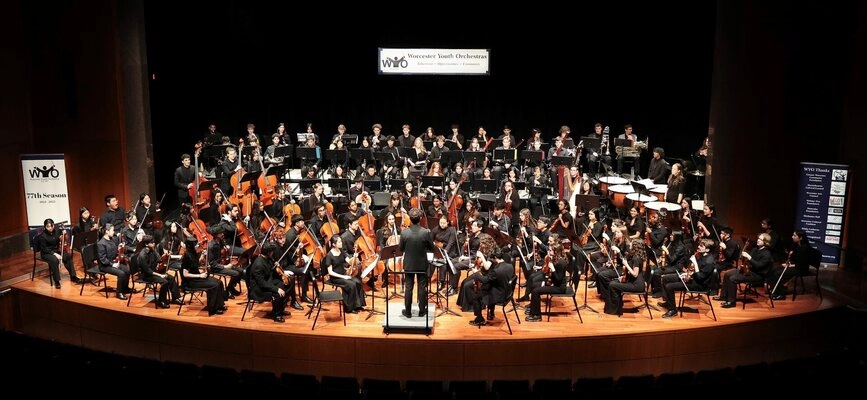
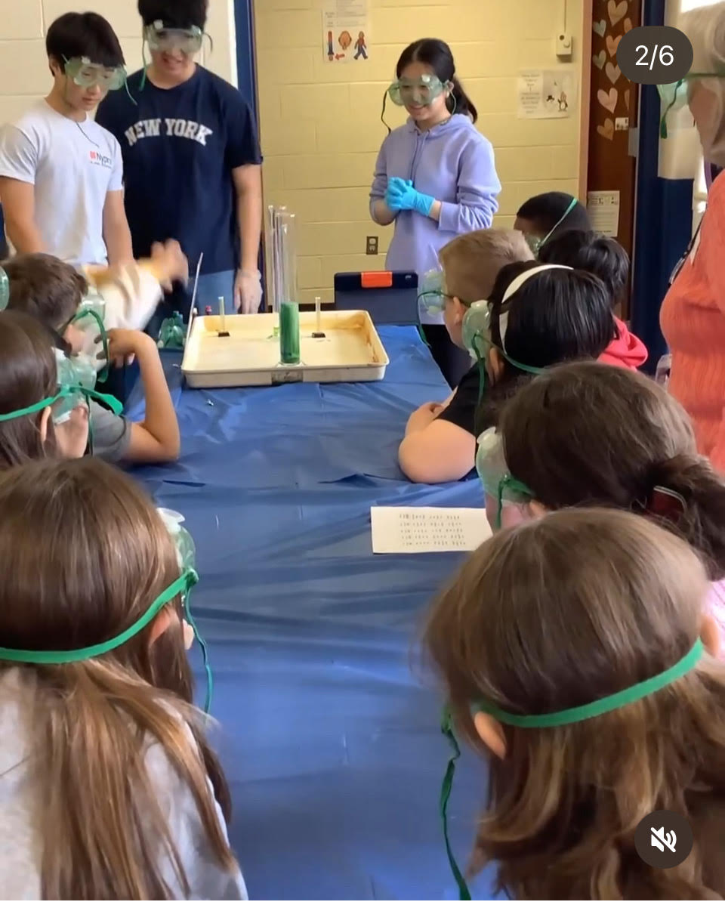

Extracurricular
-------------------------

During high school, I have participated in many extracurricular
activities. I plan to continue to do all of these next year.
Orchestra

I have been a member of the Worcester Youth Orchestra for four years. For the first two years, I was a first violin in the Worcester Youth Philharmonic and Worcester Youth Baroque Orchestra. Then I auditioned for the Symphony Orchestra and is now a first violin member of the orchestra. Some works we have played are Dvorak's Symphony No. 8, Lord of the Rings melody, Mahler's Symphony No. 1, and Coleridge-Taylor's The Bamboula. Here is a video of me playing!
School Clubs

During freshman, I participated in the Chemistry Club and Girls Who Code Club. In Chemistry Club, we did many fun experiments. During the year we did marbling, baking a cake, making golden pennies, etc. In the club, we were also playing with fire (safely of course). During April, I went to three elementary schools in Shrewsbury to teach the kids about Chemistry. The station I was responsible for is the elephant toothpaste. In Girls Who Code, they just taught us how to code.
Projects:

Here are the links to my projects!
- Project 1
- Word
Fold
Project 1:
--------------
Project 1 contains a few parts. There is a text box that changes
to a different color every two second. The color is random. It
gives off a shinning affect when it changes from a dark to a light
color. We can also change the background color and when you click
the "click me button", it would say "you did it" and "this is my
script". On the website, there is also a spinning ball that says
"kpop is amazing". Under that section, we have a section that can
help you with your math skills. Although it os basic math, it can
help you with your speed and help you review your basics. If you
get the questions right, the car will move forward a little bit.
The next section helps you find the lyrics of your favorite song.
If you give the song title, artist, and drama (optional), it would
give you your lyrics! The last section is a fun kpop song guessing
game (girl group edition).
Word Fold
------------------
This is a fun game that me, Nashmia, and Ammarah modified. To
make it slightly challenging, we have the background color change
every half a second. On the side, there are random non-circular
balls just slowly floating around. On the bottom of the game
board, it list the words you needed to spell. If you spell the
word right, the word would light up and give you the math
question. Only if you get the math question right, you clear the
word. There is a time limit of 2 minutes.
Contact Information:
Email: hqiu@wpi.edu
I was born in Shanghai, China in 2009.